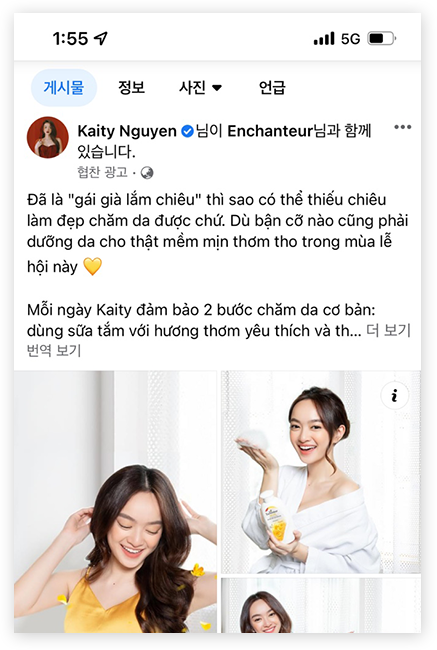
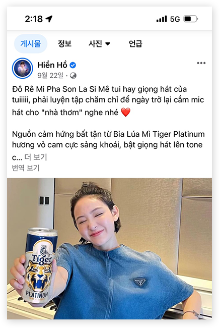
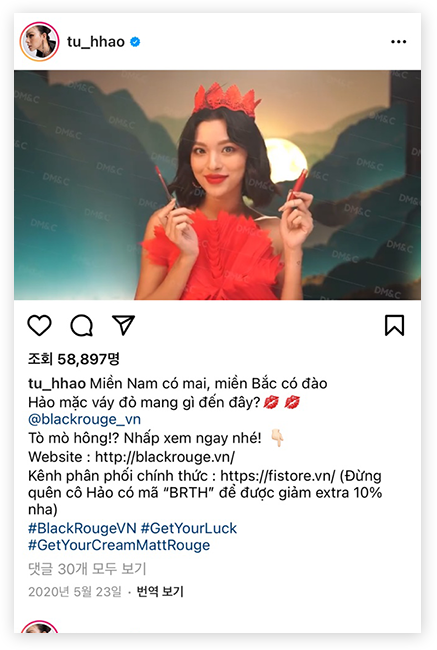
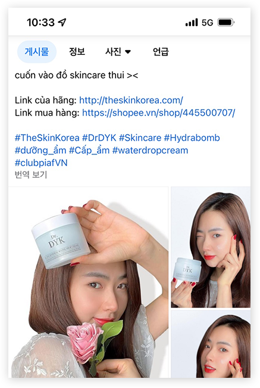

<? include "../inc/header.html"; ?>
<script src="../js/slick.js"></script>
<link rel="stylesheet" type="text/css" href="../css/slick.css" />
<link rel="stylesheet" type="text/css" href="../css/slick-theme.css" />
<main class="subContents">
  <div class="sub_center">

    <div class="subHead poppins">
      <h2 class="pageTitle">Work</h2>
      <ul class="subPages">
        <li><a href="sub01.html">Facebook</a></li>
        <li class="on"><a href="sub02.html">Influencer</a></li>
      </ul>
    </div>

    <dl class="workDl">
      <dt class="poppins">Influencer Marketing</dt>
      <dd>다양한 현지 인플루언서를 확보할 수 있는 섭외력을 자랑하며<br />
        브랜드 간 컨셉 맞춤 인플루언서 매칭을 도와드립니다.</dd>
    </dl>

    <ul class="instarImgs">
      <li class="instar01"></li>
      <li class="instar02"></li>
      <li class="instar03"></li>
      <li class="instar04"></li>
    </ul>

    <dl class="sectionDl mb80">
      <dt>KOL 매칭</dt>
      <dd>등급별 셀럽 섭외력 확보 및 브랜드 콘셉트 맞춤 제안</dd>
    </dl>

    <section class="workSection mb80">
      <p class="workSection__title">제공 서비스</p>

      <div class="workSection__right">
        <div class="workSection__boxes">
          <ul class="workSection__ul">
            <li>
              <dl class="workSection__boxDl">
                <dt>콘셉트 매칭 섭외</dt>
                <dd>브랜드의 이미지와 마케팅 포인트에
                  걸맞는 KOL 섭외 및 제안</dd>
              </dl>
            </li>
            <li>
              <dl class="workSection__boxDl">
                <dt>예산 맞춤 KOL 등급 제안</dt>
                <dd>캠페인 목표와 예산을 고려하여
                  KOL 선택적 제안</dd>
              </dl>
            </li>
            <li>
              <dl class="workSection__boxDl">
                <dt>광고 플래닝 및 전반 진행</dt>
                <dd>캠페인 스케쥴에 맞춰 시딩 작업 및
                  포스팅 기획 등 전반 작업 진행</dd>
              </dl>
            </li>
          </ul>
        </div>
      </div>
    </section>

    <section class="workSection">
      <p class="workSection__title">장점</p>

      <div class="workSection__right">
        <ul class="workSection__dots">
          <li>베트남 트렌드를 선도하는 데 많은 영향력을 끼치는 인플루언서를 통해 광고 효율 극대화</li>
          <li>탄탄한 현지 인프라를 통해 폭 넓은 인플루언서 섭외 진행</li>
          <li>타겟층의 소비심리를 자극할 수 있는 트렌드를 적용하여 빠른 구매로 전환</li>
        </ul>
      </div>
    </section>
  </div>
</main>

<script src="../js/sub.js"></script>

<script>
  $('.instarImgs').slick({
    slidesToShow: 3,
    slidesToScroll: 1,
    dots: false,
    infinite: true,
    autoplay: true,
    autoplaySpeed: 2000,
    speed: 800,
    arrows: false,
    responsive: [{
        breakpoint: 960,
        settings: {
          slidesToShow: 2,
          slidesToScroll: 1
        }
      },
      {
        breakpoint: 768,
        settings: {
          slidesToShow: 1,
          slidesToScroll: 1,
        }
      }
    ]
  });
</script>

<? include "../inc/footer.html"; ?>